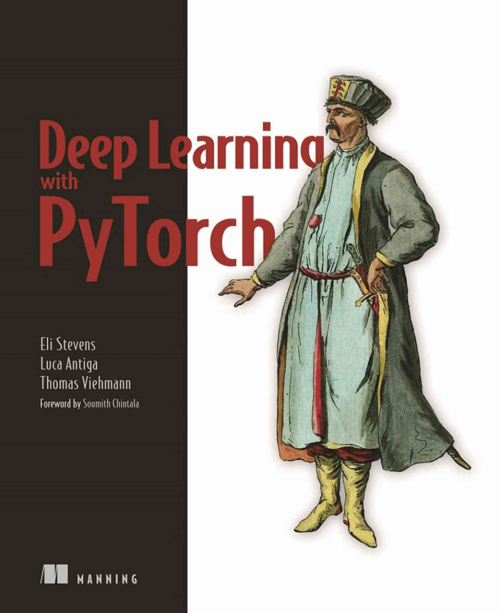
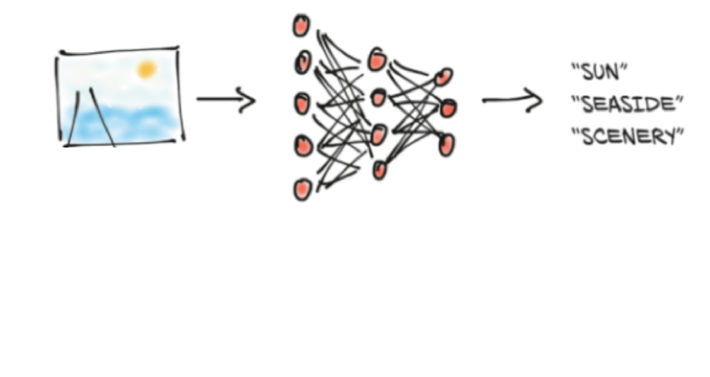
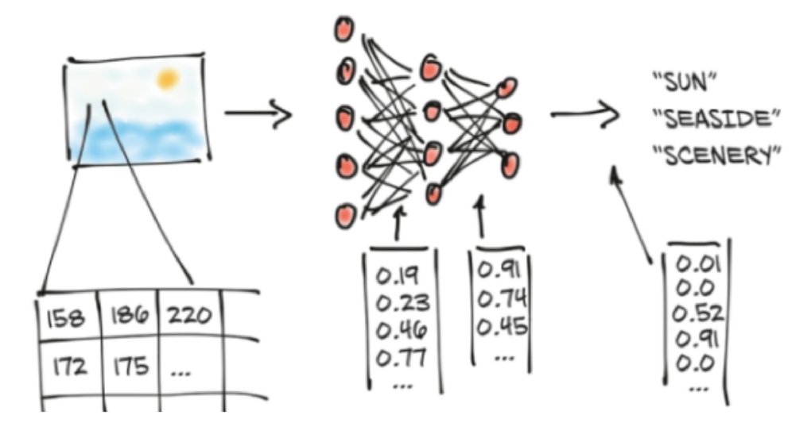
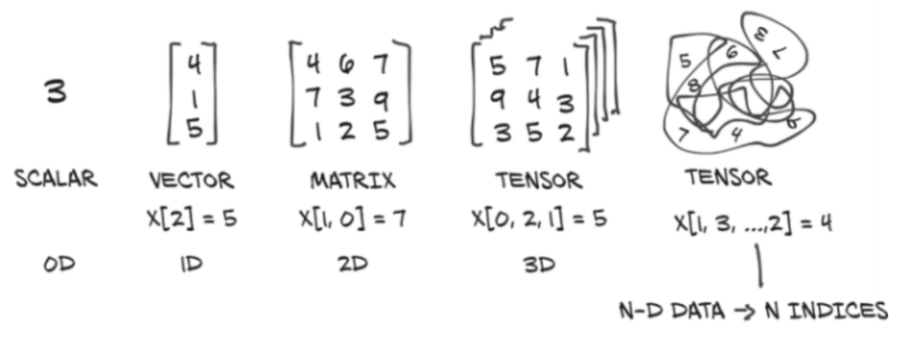
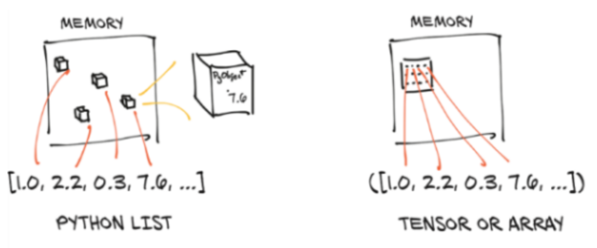
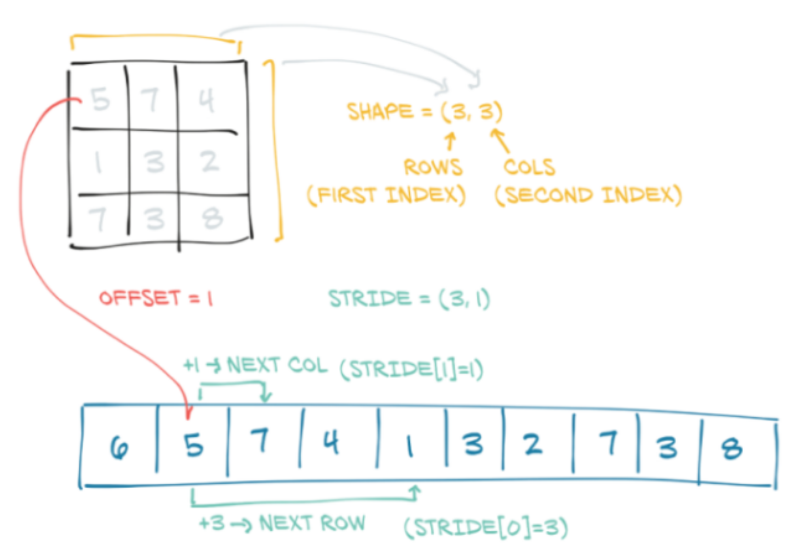
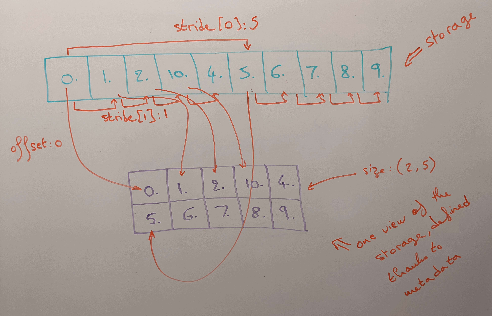
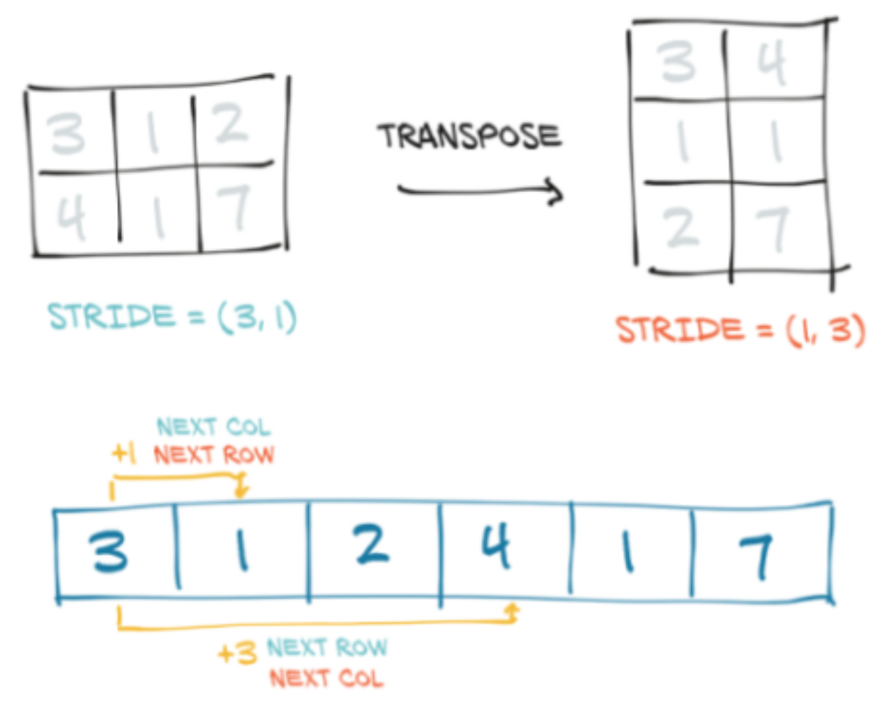

Everything you wanted to know (and more!) about PyTorch tensors
Content from the webinar slides for easier browsing.
Notes
Acknowledgements
Many drawings in this webinar come from the book:

The section on storage is also highly inspired by it.
Using tensors locally
You need to have Python and PyTorch installed.
Additionally, you might want to use an IDE such as elpy if you are an Emacs user, JupyterLab, etc.
Note that PyTorch does not yet support Python 3.10 except in some Linux distributions or on systems where a wheel has been built For the time being, you might have to use it with Python 3.9.
Using tensors on CC clusters
List available wheels and compatible Python versions (in the terminal):
avail_wheels "torch*"List available Python versions:
module avail pythonGet setup:
module load python/3.9.6 # Load a sensible Python version
virtualenv --no-download env # Create a virtual env
source env/bin/activate # Activate the virtual env
pip install --no-index --upgrade pip # Update pip
pip install --no-index torch # Install PyTorchYou can then launch jobs with sbatch or salloc.
Leave the virtual env with the command: deactivate.
Outline
- What is a PyTorch tensor?
- Memory storage
- Data type (dtype)
- Basic operations
- Working with NumPy
- Linear algebra
- Harvesting the power of GPUs
- Distributed operations
Why tensor objects?
ANN do not process information directly:

The information needs to be converted to numbers:

These numbers must be stored in a data structure:
PyTorch tensors are Python objects holding multidimensional arrays.

Why a new object?
(Particularly when NumPy already exists).
- Can run on accelerators (GPUs, TPUs…).
- Keep track of computation graphs, allowing automatic differentiation.
- Future plan for sharded tensors to run distributed computations.
What is a PyTorch tensor?
PyTorch is foremost a deep learning library.
In deep learning, the information contained in objects of interest (e.g. images, texts, sounds) is converted to floating-point numbers (e.g. pixel values, token values, frequencies).
As this information is complex, multiple dimensions are required (e.g. two dimensions for the width and height of an image, plus one dimension for the RGB colour channels).
Additionally, items are grouped into batches to be processed together, adding yet another dimension.
Multidimensional arrays are thus particularly well suited for deep learning.
Artificial neurons perform basic computations on these tensors.
Their number however is huge and computing efficiency is paramount.
GPUs/TPUs are particularly well suited to perform many simple operations in parallel.
The very popular NumPy library has, at its core, a mature multidimensional array object well integrated into the scientific Python ecosystem.
But the PyTorch tensor has additional efficiency characteristics ideal for machine learning and it can be converted to/from NumPy’s ndarray if needed.
Efficient memory storage
In Python, collections (lists, tuples) are groupings of boxed Python objects.
PyTorch tensors and NumPy ndarrays are made of unboxed C numeric types.

They are usually contiguous memory blocks, but the main difference is that they are unboxed: floats will thus take 4 (32-bit) or 8 (64-bit) bytes each.
Boxed values take up more memory (memory for the pointer + memory for the primitive).
Implementation
Under the hood, the values of a PyTorch tensor are stored as a torch.Storage instance which is a one-dimensional array.
import torch
t = torch.arange(10.).view(2, 5); print(t) # Functions explained latertensor([[ 0., 1., 2., 3., 4.],
[ 5., 6., 7., 8., 9.]])storage = t.storage(); print(storage) 0.0
1.0
2.0
3.0
4.0
5.0
6.0
7.0
8.0
9.0
[torch.FloatStorage of size 10]The storage can be indexed:
storage[3]3.0storage[3] = 10.0; print(storage) 0.0
1.0
2.0
10.0
4.0
5.0
6.0
7.0
8.0
9.0
[torch.FloatStorage of size 10]To view a multidimensional array from storage, we need metadata:
- the size (shape in NumPy) sets the number of elements in each dimension,
- the offset indicates where the first element of the tensor is in the storage,
- the stride establishes the increment between each element.
Storage metadata

t.size()
t.storage_offset()
t.stride()torch.Size([2, 5])
0
(5, 1)
Transposing in 2 dimensions
t = torch.tensor([[3, 1, 2], [4, 1, 7]]); print(t)
t.size()
t.t()
t.t().size()tensor([[3, 1, 2],
[4, 1, 7]])
torch.Size([2, 3])
tensor([[3, 4],
[1, 1],
[2, 7]])
torch.Size([3, 2])This is the same as flipping the stride elements around.

Transposing in higher dimensions
torch.t() is a shorthand for torch.transpose(0, 1):
torch.equal(t.t(), t.transpose(0, 1))TrueWhile torch.t() only works for 2D tensors, torch.transpose() can be used to transpose 2 dimensions in tensors of any number of dimensions:
t = torch.zeros(1, 2, 3); print(t)
t.size()
t.stride()tensor([[[0., 0., 0.],
[0., 0., 0.]]])
torch.Size([1, 2, 3])
(6, 3, 1)t.transpose(0, 1)
t.transpose(0, 1).size()
t.transpose(0, 1).stride()tensor([[[0., 0., 0.]],
[[0., 0., 0.]]])
torch.Size([2, 1, 3])
(3, 6, 1) # Notice how transposing flipped 2 elements of the stridet.transpose(0, 2)
t.transpose(0, 2).size()
t.transpose(0, 2).stride()tensor([[[0.],
[0.]],
[[0.],
[0.]],
[[0.],
[0.]]])
torch.Size([3, 2, 1])
(1, 3, 6)t.transpose(1, 2)
t.transpose(1, 2).size()
t.transpose(1, 2).stride()tensor([[[0., 0.],
[0., 0.],
[0., 0.]]])
torch.Size([1, 3, 2])
(6, 1, 3)Default dtype
Since PyTorch tensors were built with utmost efficiency in mind for neural networks, the default data type is 32-bit floating points.
This is sufficient for accuracy and much faster than 64-bit floating points.
Note that, by contrast, NumPy ndarrays use 64-bit as their default.
List of PyTorch tensor dtypes
| torch.float16 / torch.half | 16-bit / half-precision floating-point | |
| torch.float32 / torch.float | 32-bit / single-precision floating-point | |
| torch.float64 / torch.double | 64-bit / double-precision floating-point | |
| torch.uint8 | unsigned 8-bit integers | |
| torch.int8 | signed 8-bit integers | |
| torch.int16 / torch.short | signed 16-bit integers | |
| torch.int32 / torch.int | signed 32-bit integers | |
| torch.int64 / torch.long | signed 64-bit integers | |
| torch.bool | boolean |
Checking and changing dtype
t = torch.rand(2, 3)
print(t)
# Remember that the default dtype for PyTorch tensors is float32
t.dtype
# If dtype ≠ default, it is printed
t2 = t.type(torch.float64)
print(t2)
t2.dtypetensor([[0.8130, 0.3757, 0.7682],
[0.3482, 0.0516, 0.3772]])
torch.float32
tensor([[0.8130, 0.3757, 0.7682],
[0.3482, 0.0516, 0.3772]], dtype=torch.float64)
torch.float64Creating tensors
torch.tensor: Input individual valuestorch.arange: Similar torangebut creates a 1D tensortorch.linspace: 1D linear scale tensortorch.logspace: 1D log scale tensortorch.rand: Random numbers from a uniform distribution on[0, 1)torch.randn: Numbers from the standard normal distributiontorch.randperm: Random permutation of integerstorch.empty: Uninitialized tensortorch.zeros: Tensor filled with0torch.ones: Tensor filled with1torch.eye: Identity matrix
torch.manual_seed(0) # If you want to reproduce the result
torch.rand(1)
torch.manual_seed(0) # Run before each operation to get the same result
torch.rand(1).item() # Extract the value from a tensortensor([0.4963])
0.49625658988952637torch.rand(1)
torch.rand(1, 1)
torch.rand(1, 1, 1)
torch.rand(1, 1, 1, 1)tensor([0.6984])
tensor([[0.5675]])
tensor([[[0.8352]]])
tensor([[[[0.2056]]]])torch.rand(2)
torch.rand(2, 2, 2, 2)tensor([0.5932, 0.1123])
tensor([[[[0.1147, 0.3168],
[0.6965, 0.9143]],
[[0.9351, 0.9412],
[0.5995, 0.0652]]],
[[[0.5460, 0.1872],
[0.0340, 0.9442]],
[[0.8802, 0.0012],
[0.5936, 0.4158]]]])torch.rand(2)
torch.rand(3)
torch.rand(1, 1)
torch.rand(1, 1, 1)
torch.rand(2, 6)tensor([0.7682, 0.0885])
tensor([0.1320, 0.3074, 0.6341])
tensor([[0.4901]])
tensor([[[0.8964]]])
tensor([[0.4556, 0.6323, 0.3489, 0.4017, 0.0223, 0.1689],
[0.2939, 0.5185, 0.6977, 0.8000, 0.1610, 0.2823]])torch.rand(2, 4, dtype=torch.float64) # You can set dtype
torch.ones(2, 1, 4, 5)tensor([[0.6650, 0.7849, 0.2104, 0.6767],
[0.1097, 0.5238, 0.2260, 0.5582]], dtype=torch.float64)
tensor([[[[1., 1., 1., 1., 1.],
[1., 1., 1., 1., 1.],
[1., 1., 1., 1., 1.],
[1., 1., 1., 1., 1.]]],
[[[1., 1., 1., 1., 1.],
[1., 1., 1., 1., 1.],
[1., 1., 1., 1., 1.],
[1., 1., 1., 1., 1.]]]])t = torch.rand(2, 3); print(t)
torch.zeros_like(t) # Matches the size of t
torch.ones_like(t)
torch.randn_like(t)tensor([[0.4051, 0.6394, 0.0871],
[0.4509, 0.5255, 0.5057]])
tensor([[0., 0., 0.],
[0., 0., 0.]])
tensor([[1., 1., 1.],
[1., 1., 1.]])
tensor([[-0.3088, -0.0104, 1.0461],
[ 0.9233, 0.0236, -2.1217]])torch.arange(2, 10, 4) # From 2 to 10 in increments of 4
torch.linspace(2, 10, 4) # 4 elements from 2 to 10 on the linear scale
torch.logspace(2, 10, 4) # Same on the log scale
torch.randperm(4)
torch.eye(3)tensor([2, 6])
tensor([2.0000, 4.6667, 7.3333, 10.0000])
tensor([1.0000e+02, 4.6416e+04, 2.1544e+07, 1.0000e+10])
tensor([1, 3, 2, 0])
tensor([[1., 0., 0.],
[0., 1., 0.],
[0., 0., 1.]])Tensor information
t = torch.rand(2, 3); print(t)
t.size()
t.dim()
t.numel()tensor([[0.5885, 0.7005, 0.1048],
[0.1115, 0.7526, 0.0658]])
torch.Size([2, 3])
2
6Tensor indexing
x = torch.rand(3, 4)
x[:] # With a range, the comma is implicit: same as x[:, ]
x[:, 2]
x[1, :]
x[2, 3]tensor([[0.6575, 0.4017, 0.7391, 0.6268],
[0.2835, 0.0993, 0.7707, 0.1996],
[0.4447, 0.5684, 0.2090, 0.7724]])
tensor([0.7391, 0.7707, 0.2090])
tensor([0.2835, 0.0993, 0.7707, 0.1996])
tensor(0.7724)x[-1:] # Last element (implicit comma, so all columns)
# No range, no implicit comma
# Indexing from a list of tensors, so the result is a one dimensional tensor
# (Each dimension is a list of tensors of the previous dimension)
x[-1]
x[-1].size() # Same number of dimensions than x (2 dimensions)
x[-1:].size() # We dropped one dimensiontensor([[0.8168, 0.0879, 0.2642, 0.3777]])
tensor([0.8168, 0.0879, 0.2642, 0.3777])
torch.Size([4])
torch.Size([1, 4])x[0:1] # Python ranges are inclusive to the left, not the right
x[:-1] # From start to one before last (and implicit comma)
x[0:3:2] # From 0th (included) to 3rd (excluded) in increment of 2tensor([[0.5873, 0.0225, 0.7234, 0.4538]])
tensor([[0.5873, 0.0225, 0.7234, 0.4538],
[0.9525, 0.0111, 0.6421, 0.4647]])
tensor([[0.5873, 0.0225, 0.7234, 0.4538],
[0.8168, 0.0879, 0.2642, 0.3777]])x[None] # Adds a dimension of size one as the 1st dimension
x.size()
x[None].size()tensor([[[0.5873, 0.0225, 0.7234, 0.4538],
[0.9525, 0.0111, 0.6421, 0.4647],
[0.8168, 0.0879, 0.2642, 0.3777]]])
torch.Size([3, 4])
torch.Size([1, 3, 4])A word of caution about indexing
While indexing elements of a tensor to extract some of the data as a final step of some computation is fine, you should not use indexing to run operations on tensor elements in a loop as this would be extremely inefficient.
Instead, you want to use vectorized operations.
Operations on tensors
Vectorized operations
Since PyTorch tensors are homogeneous (i.e. made of a single data type), as with NumPy’s ndarrays, operations are vectorized and thus staggeringly fast.
NumPy is mostly written in C and PyTorch in C++. With either library, when you run vectorized operations on arrays/tensors, you don’t use raw Python (slow) but compiled C/C++ code (much faster).
Here is an excellent post explaining Python vectorization and why it makes such a big difference.
Comparison
Raw Python method:
# Create tensor. We use float64 here to avoid truncation errors
t = torch.rand(10**6, dtype=torch.float64)
# Initialize sum
su# Run loop
for i in range(len(t)): sum += t[i]
# Print result
print(sum)Vectorized function:
t.sum()Both methods give the same result.
This is why we used float64:
While the accuracy remains excellent with float32 if we use the PyTorch function torch.sum(), the raw Python loop gives a fairly inaccurate result.
tensor(500023.0789, dtype=torch.float64)
tensor(500023.0789, dtype=torch.float64)Timing
Let’s compare the timing with PyTorch built-in benchmark utility:
# Load utility
import torch.utils.benchmark as benchmark
# Create a function for our loop
def sum_loop(t, sum):
for i in range(len(t)): sum += t[i]Now we can create the timers:
t0 = benchmark.Timer(
stmt='sum_loop(t, sum)',
setup='from __main__ import sum_loop',
globals={'t': t, 'sum': sum})
t1 = benchmark.Timer(
stmt='t.sum()',
globals={'t': t})Let’s time 100 runs to have a reliable benchmark:
print(t0.timeit(100))
print(t1.timeit(100))I ran the code on my laptop with a dedicated GPU and 32GB RAM.
Timing of raw Python loop:
sum_loop(t, sum)
setup: from __main__ import sum_loop
1.37 s
1 measurement, 100 runs , 1 threadTiming of vectorized function:
t.sum()
191.26 us
1 measurement, 100 runs , 1 threadSpeedup:
1.37/(191.26 * 10**-6) = 7163The vectorized function runs more than 7,000 times faster!!!
Even more important on GPUs
We will talk about GPUs in detail later.
Timing of raw Python loop on GPU (actually slower on GPU!)
sum_loop(t, sum)
setup: from __main__ import sum_loop
4.54 s
1 measurement, 100 runs , 1 threadTiming of vectorized function on GPU (here we do get a speedup):
t.sum()
50.62 us
1 measurement, 100 runs , 1 threadSpeedup:
4.54/(50.62 * 10**-6) = 89688On GPUs, it is even more important not to index repeatedly from a tensor.
On GPUs, the vectorized function runs almost 90,000 times faster!!!
Simple mathematical operations
t1 = torch.arange(1, 5).view(2, 2); print(t1)
t2 = torch.tensor([[1, 1], [0, 0]]); print(t2)
t1 + t2 # Operation performed between elements at corresponding locations
t1 + 1 # Operation applied to each element of the tensortensor([[1, 2],
[3, 4]])
tensor([[1, 1],
[0, 0]])
tensor([[2, 3],
[3, 4]])
tensor([[2, 3],
[4, 5]])Reduction
t = torch.ones(2, 3, 4); print(t)
t.sum() # Reduction over all entriestensor([[[1., 1., 1., 1.],
[1., 1., 1., 1.],
[1., 1., 1., 1.]],
[[1., 1., 1., 1.],
[1., 1., 1., 1.],
[1., 1., 1., 1.]]])
tensor(24.)Other reduction functions (e.g. mean) behave the same way.
# Reduction over a specific dimension
t.sum(0)
t.sum(1)
t.sum(2)tensor([[2., 2., 2., 2.],
[2., 2., 2., 2.],
[2., 2., 2., 2.]])
tensor([[3., 3., 3., 3.],
[3., 3., 3., 3.]])
tensor([[4., 4., 4.],
[4., 4., 4.]])# Reduction over multiple dimensions
t.sum((0, 1))
t.sum((0, 2))
t.sum((1, 2))tensor([6., 6., 6., 6.])
tensor([8., 8., 8.])
tensor([12., 12.])In-place operations
With operators post-fixed with _:
t1 = torch.tensor([1, 2]); print(t1)
t2 = torch.tensor([1, 1]); print(t2)
t1.add_(t2); print(t1)
t1.zero_(); print(t1)tensor([1, 2])
tensor([1, 1])
tensor([2, 3])
tensor([0, 0])In-place operations vs reassignments
t1 = torch.ones(1); t1, hex(id(t1))
t1.add_(1); t1, hex(id(t1)) # In-place operation: same address
t1 = t1.add(1); t1, hex(id(t1)) # Reassignment: new address in memory
t1 = t1 + 1; t1, hex(id(t1)) # Reassignment: new address in memory(tensor([1.]), '0x7fc61accc3b0')
(tensor([2.]), '0x7fc61accc3b0')
(tensor([3.]), '0x7fc61accc5e0')
(tensor([4.]), '0x7fc61accc6d0')Logical operations
t1 = torch.randperm(5); print(t1)
t2 = torch.randperm(5); print(t2)
t1 > 3 # Test each element
t1 < t2 # Test corresponding pairs of elementstensor([4, 1, 0, 2, 3])
tensor([0, 4, 2, 1, 3])
tensor([ True, False, False, False, False])
tensor([False, True, True, False, False])Tensor views
t = torch.tensor([[1, 2, 3], [4, 5, 6]]); print(t)
t.size()
t.view(6)
t.view(3, 2)
t.view(3, -1) # Same: with -1, the size is inferred from other dimensionstensor([[1, 2, 3],
[4, 5, 6]])
torch.Size([2, 3])
tensor([1, 2, 3, 4, 5, 6])
tensor([[1, 2],
[3, 4],
[5, 6]])Note the difference
t1 = torch.tensor([[1, 2, 3], [4, 5, 6]]); print(t1)
t2 = t1.t(); print(t2)
t3 = t1.view(3, 2); print(t3)tensor([[1, 2, 3],
[4, 5, 6]])
tensor([[1, 4],
[2, 5],
[3, 6]])
tensor([[1, 2],
[3, 4],
[5, 6]])Conversion without copy
PyTorch tensors can be converted to NumPy ndarrays and vice-versa in a very efficient manner as both objects share the same memory:
t = torch.rand(2, 3); print(t) # PyTorch Tensor
t_np = t.numpy(); print(t_np) # NumPy ndarraytensor([[0.8434, 0.0876, 0.7507],
[0.1457, 0.3638, 0.0563]])
[[0.84344184 0.08764815 0.7506627 ]
[0.14567494 0.36384273 0.05629885]]Mind the different defaults
t_np.dtypedtype('float32')Remember that PyTorch tensors use 32-bit floating points by default
(because this is what you want in neural networks).
But NumPy defaults to 64-bit.
Depending on your workflow, you might have to change dtype.
From NumPy to PyTorch
import numpy as np
a = np.random.rand(2, 3); print(a)
a_pt = torch.from_numpy(a); print(a_pt) # From ndarray to tensor[[0.55892276 0.06026952 0.72496545]
[0.65659463 0.27697739 0.29141587]]
tensor([[0.5589, 0.0603, 0.7250],
[0.6566, 0.2770, 0.2914]], dtype=torch.float64)Here again, you might have to change dtype.
Notes copies
t and t_np are objects of different Python types, so, as far as Python is concerned, they have different addresses:
id(t) == id(t_np)FalseHowever—that’s quite confusing—they share an underlying C array in memory and modifying one in-place also modifies the other:
t.zero_()
print(t_np)tensor([[0., 0., 0.],
[0., 0., 0.]])
[[0. 0. 0.]
[0. 0. 0.]]Lastly, as NumPy only works on CPU, to convert a PyTorch tensor allocated to the GPU, the content will have to be copied to the CPU first.
Linear algebra
torch.linalg module
All functions from numpy.linalg implemented (with accelerator and automatic differentiation support) + additional functions.
Requires torch >= 1.9.
Linear algebra support was less developed before the introduction of this module.
System of linear equations solver
Let’s have a look at an extremely basic example:
2x + 3y - z = 5
x - 2y + 8z = 21
6x + y - 3z = -1We are looking for the values of x, y, and z that would satisfy this system.
We create a 2D tensor A of size (3, 3) with the coefficients of the equations and a 1D tensor b of size 3 with the right hand sides values of the equations:
A = torch.tensor([[2., 3., -1.], [1., -2., 8.], [6., 1., -3.]]); print(A)
b = torch.tensor([5., 21., -1.]); print(b)tensor([[ 2., 3., -1.],
[ 1., -2., 8.],
[ 6., 1., -3.]])
tensor([ 5., 21., -1.])Solving this system is as simple as running the torch.linalg.solve function:
x = torch.linalg.solve(A, b); print(x)tensor([1., 2., 3.])Our solution is:
x = 1
y = 2
z = 3Verify our result:
torch.allclose(A @ x, b)TrueHere is another simple example:
# Create a square normal random matrix
A = torch.randn(4, 4); print(A)
# Create a tensor of right hand side values
b = torch.randn(4); print(b)
# Solve the system
x = torch.linalg.solve(A, b); print(x)
# Verify
torch.allclose(A @ x, b)(Results)
A (coefficients):
tensor([[ 1.5091, 2.0820, 1.7067, 2.3804],
[-1.1256, -0.3170, -1.0925, -0.0852],
[ 0.3276, -0.7607, -1.5991, 0.0185],
[-0.7504, 0.1854, 0.6211, 0.6382]])b (right hand side values):
tensor([-1.0886, -0.2666, 0.1894, -0.2190])x (our solution):
tensor([ 0.1992, -0.7011, 0.2541, -0.1526])Verification:
TrueWith 2 multidimensional tensors
A = torch.randn(2, 3, 3) # Must be batches of square matrices
B = torch.randn(2, 3, 5) # Dimensions must be compatible
X = torch.linalg.solve(A, B); print(X)
torch.allclose(A @ X, B)tensor([[[-0.0545, -0.1012, 0.7863, -0.0806, -0.0191],
[-0.9846, -0.0137, -1.7521, -0.4579, -0.8178],
[-1.9142, -0.6225, -1.9239, -0.6972, 0.7011]],
[[ 3.2094, 0.3432, -1.6604, -0.7885, 0.0088],
[ 7.9852, 1.4605, -1.7037, -0.7713, 2.7319],
[-4.1979, 0.0849, 1.0864, 0.3098, -1.0347]]])
TrueMatrix inversions
It is faster and more numerically stable to solve a system of linear equations directly than to compute the inverse matrix first.
Limit matrix inversions to situations where it is truly necessary.
A = torch.rand(2, 3, 3) # Batch of square matrices
A_inv = torch.linalg.inv(A) # Batch of inverse matrices
A @ A_inv # Batch of identity matricestensor([[[ 1.0000e+00, -6.0486e-07, 1.3859e-06],
[ 5.5627e-08, 1.0000e+00, 1.0795e-06],
[-1.4133e-07, 7.9992e-08, 1.0000e+00]],
[[ 1.0000e+00, 4.3329e-08, -3.6741e-09],
[-7.4627e-08, 1.0000e+00, 1.4579e-07],
[-6.3580e-08, 8.2354e-08, 1.0000e+00]]])Other linear algebra functions
torch.linalg contains many more functions:
- torch.tensordot which generalizes matrix products,
- torch.linalg.tensorsolve which computes the solution
Xto the systemtorch.tensordot(A, X) = B, - torch.linalg.eigvals which computes the eigenvalues of a square matrix,
- …
Device attribute
Tensor data can be placed in the memory of various processor types:
- the RAM of CPU,
- the RAM of a GPU with CUDA support,
- the RAM of a GPU with AMD’s ROCm support,
- the RAM of an XLA device (e.g. Cloud TPU) with the torch_xla package.
The values for the device attributes are:
- CPU:
'cpu' - GPU (CUDA and AMD’s ROCm):
'cuda' - XLA:
xm.xla_device()
This last option requires to load the torch_xla package first:
import torch_xla
import torch_xla.core.xla_model as xmCreating a tensor on a specific device
By default, tensors are created on the CPU:
t1 = torch.rand(2); print(t1)tensor([0.1606, 0.9771]) # Implicit: device='cpu'Printed tensors only display attributes with values ≠ default values.
You can create a tensor on an accelerator by specifying the device attribute:
t2_gpu = torch.rand(2, device='cuda'); print(t2_gpu)tensor([0.0664, 0.7829], device='cuda:0') # :0 means the 1st GPUCopying a tensor to a specific device
You can also make copies of a tensor on other devices:
# Make a copy of t1 on the GPU
t1_gpu = t1.to(device='cuda'); print(t1_gpu)
t1_gpu = t1.cuda() # Same as above written differently
# Make a copy of t2_gpu on the CPU
t2 = t2_gpu.to(device='cpu'); print(t2)
t2 = t2_gpu.cpu() # For the altenative formtensor([0.1606, 0.9771], device='cuda:0')
tensor([0.0664, 0.7829]) # Implicit: device='cpu'Multiple GPUs
If you have multiple GPUs, you can optionally specify which one a tensor should be created on or copied to:
t3_gpu = torch.rand(2, device='cuda:0') # Create a tensor on 1st GPU
t4_gpu = t1.to(device='cuda:0') # Make a copy of t1 on 1st GPU
t5_gpu = t1.to(device='cuda:1') # Make a copy of t1 on 2nd GPUOr the equivalent short forms for the last two:
t4_gpu = t1.cuda(0)
t5_gpu = t1.cuda(1)Timing
Let’s compare the timing of some matrix multiplications on CPU and GPU with PyTorch built-in benchmark utility:
# Load utility
import torch.utils.benchmark as benchmark
# Define tensors on the CPU
A = torch.randn(500, 500)
B = torch.randn(500, 500)
# Define tensors on the GPU
A_gpu = torch.randn(500, 500, device='cuda')
B_gpu = torch.randn(500, 500, device='cuda')I ran the code on my laptop with a dedicated GPU and 32GB RAM.
Let’s time 100 runs to have a reliable benchmark:
t0 = benchmark.Timer(
stmt='A @ B',
globals={'A': A, 'B': B})
t1 = benchmark.Timer(
stmt='A_gpu @ B_gpu',
globals={'A_gpu': A_gpu, 'B_gpu': B_gpu})
print(t0.timeit(100))
print(t1.timeit(100))A @ B
2.29 ms
1 measurement, 100 runs , 1 thread
A_gpu @ B_gpu
108.02 us
1 measurement, 100 runs , 1 threadSpeedup:
(2.29 * 10**-3)/(108.02 * 10**-6) = 21This computation was 21 times faster on my GPU than on CPU.
By replacing 500 with 5000, we get:
A @ B
2.21 s
1 measurement, 100 runs , 1 thread
A_gpu @ B_gpu
57.88 ms
1 measurement, 100 runs , 1 threadSpeedup:
2.21/(57.88 * 10**-3) = 38The larger the computation, the greater the benefit: now 38 times faster.
Parallel tensor operations
PyTorch already allows for distributed training of ML models.
The implementation of distributed tensor operations—for instance for linear algebra—is in the work through the use of a ShardedTensor primitive that can be sharded across nodes.
See also this issue for more comments about upcoming developments on (among other things) tensor sharding.